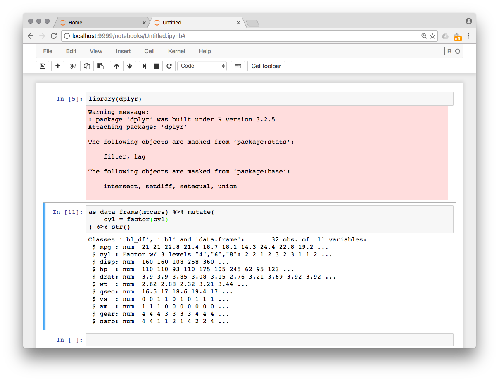

Зачем
Для кого:
- аналитики
- студенты / преподаватели
Для какой задачи:
- используется интерпретируемый язык программирования
- набор данных помещается в память
- результат — отчёт
или код решения
\(\Rightarrow\) удобно использовать интерактивные сессии
Анастасия Миллер
\(\Rightarrow\) удобно использовать интерактивные сессии





Процесс подготовки отчёта:
Notebook
rpy2 — интерактивное взаимодействие между Python и R и другие удовольствия